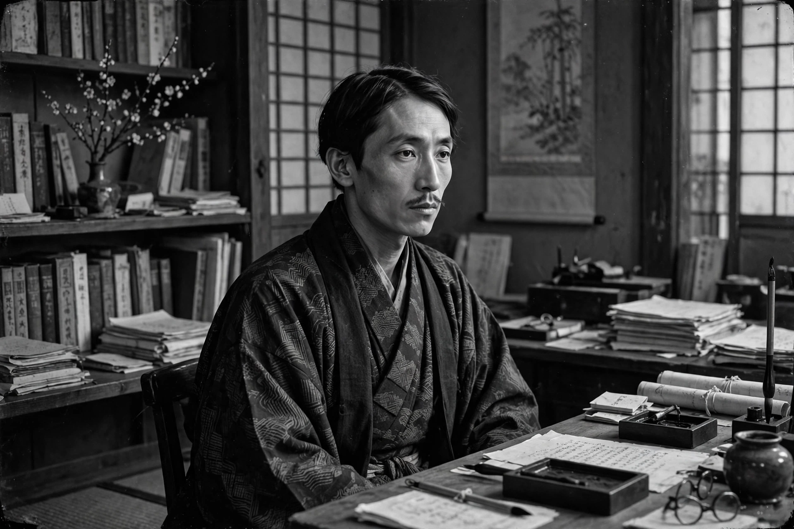

Ryūnosuke Akutagawa (Japanese: 芥川 龍之介; 1 March 1892 – 24 July 1927) was a Japanese writer active in the Taishō period, regarded as the father of the modern Japanese short story. His stories — among them "Rashōmon", "In a Grove", "Hell Screen", "The Nose", and the satirical Kappa — combine classical Japanese and Chinese sources with modern psychology and a polished, ironic style. Japan's most prestigious literary award for new writers, the Akutagawa Prize, is named for him. He died by suicide at 35, citing a "vague unease" about his future.
| Ryūnosuke Akutagawa | |
|---|---|
 Akutagawa in his study | |
| Born | 1 March 1892, Kyōbashi, Tokyo, Japan |
| Died | 24 July 1927 (aged 35), Tabata, Tokyo, Japan |
| Occupation | Short-story writer, essayist |
| Alma mater | Tokyo Imperial University (English literature) |
| Notable works | "Rashōmon"; "In a Grove"; "Hell Screen"; Kappa |
| Legacy | Akutagawa Prize established in his memory (1935) |
Akutagawa was born in Tokyo, the son of a dairy farmer; his mother developed mental illness months after his birth and he was adopted and raised by his maternal uncle, whose surname he took. A bookish, frail child, he excelled at Tokyo's First Higher School and studied English literature at Tokyo Imperial University, where he co-founded the magazine Shinshichō and published translations of Yeats and Anatole France. His story "The Nose" (1916), about a priest tormented by his long nose, won the praise of Natsume Sōseki, whose salon he attended. After graduating he taught briefly at the naval engineering school at Yokosuka, then resigned in 1919 to write for the Osaka Mainichi newspaper, traveling to China in 1921 as a correspondent — a journey that damaged his already fragile health.
Akutagawa's mature stories rework tales from medieval collections such as the Konjaku Monogatari: "Rashōmon" (1915) stages a starving servant's choice between theft and death beneath the ruined gate; "In a Grove" (1922) gives seven contradictory testimonies about a murder, never resolving the truth — the two stories together inspired Akira Kurosawa's film Rashomon (1950), which introduced Japanese cinema to the world. "Hell Screen" (1918) is a harrowing tale of an artist who demands a real burning carriage to paint a screen of hell. Later works turned autobiographical and despairing: A Fool's Life and the fantastical, Swiftian Kappa (1927) record a mind confronting madness — he feared inheriting his mother's illness — and the suffocation of his age.
On 24 July 1927 Akutagawa took a fatal overdose of barbital at his home in Tabata, leaving a note speaking of "a vague unease" (bokutoshita fuan) about the future; the phrase became emblematic of Taishō intellectual anxiety. In 1935 his friend Kikuchi Kan founded the Akutagawa Prize, now Japan's best-known award for new fiction writers, awarded twice yearly alongside the Naoki Prize. His roughly 150 stories remain standard reading in Japan and among the most translated of Japanese literature.
From Wikipedia, the free encyclopedia (recreated from memory).